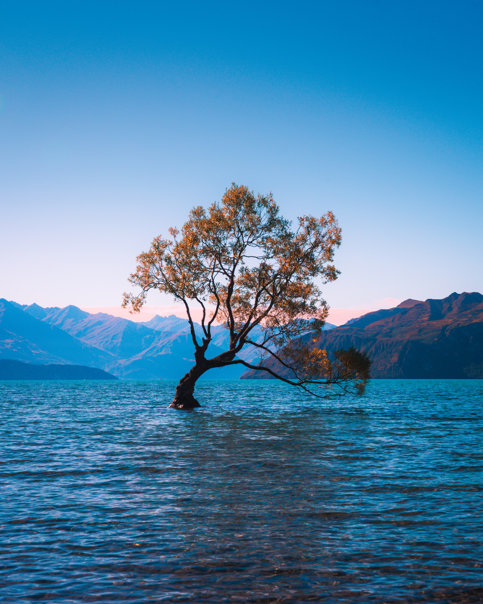
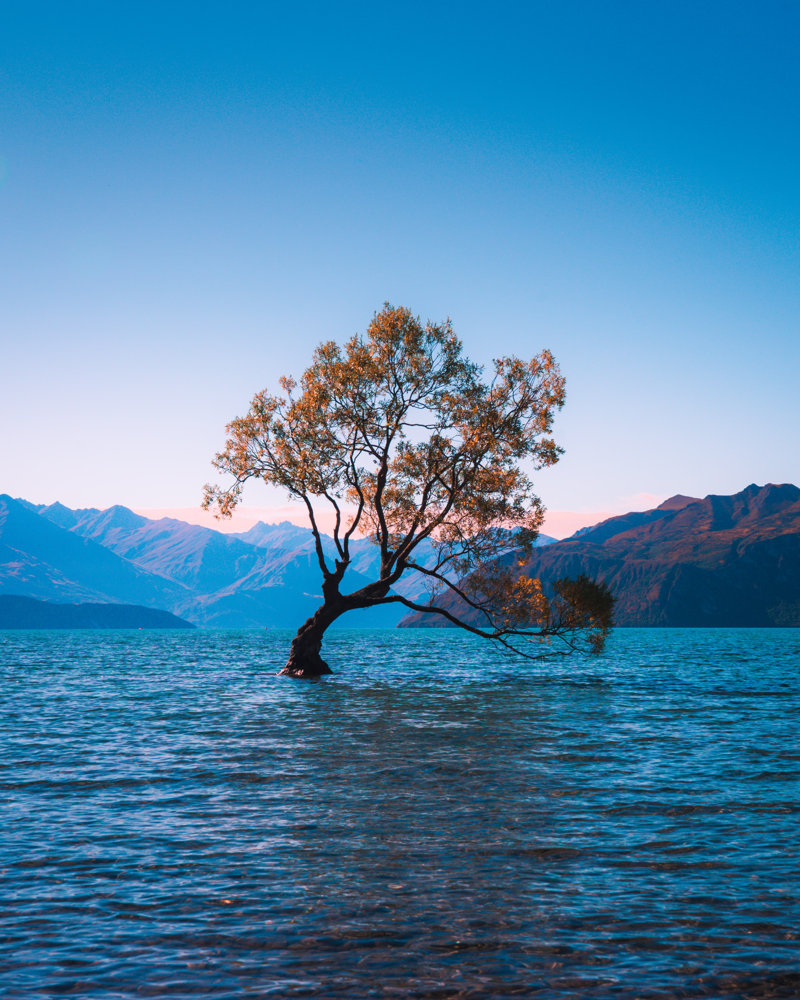

Die Kraft der Selbstreflexion: Eine Reise zu persönlichem Wachstum
Willkommen auf meinem Blog! Hier teile ich meine Gedanken, Erfahrungen und Erkenntnisse über die transformative Kraft der Selbstreflexion. In unserer hektischen Welt, in der wir oft im Autopilot-Modus leben, ist es entscheidend, innezuhalten und uns mit unserem Inneren zu verbinden.

Selbstreflexion
Selbstreflexion ist ein Weg, um Klarheit über unsere Ziele, Werte und Träume zu gewinnen. Indem wir uns bewusst Zeit nehmen, um über unser Leben nachzudenken, können wir uns selbst besser verstehen, unsere Stärken und Schwächen erkennen und bewusste Entscheidungen treffen. Einer der ersten Schritte auf dieser Reise der Selbstreflexion ist das Bewusstsein für unsere eigenen Gedanken und Gefühle. Oft sind wir uns nicht einmal bewusst, wie sehr uns unsere eigenen Denkmuster und Überzeugungen beeinflussen. Durch das Erkunden unserer inneren Welt können wir uns von destruktiven Gedankenmustern befreien und neue positive Denkweisen entwickeln.
Schwerpunkt
Ein weiterer Schwerpunkt meines Blogs wird die Entwicklung von Achtsamkeit sein. Achtsamkeit ermöglicht es uns, den gegenwärtigen Moment bewusst zu erleben und uns von Ängsten über die Zukunft oder Sorgen über die Vergangenheit zu lösen. Indem wir uns auf den gegenwärtigen Moment konzentrieren, können wir unsere Sinne schärfen und eine tiefere Verbindung zu uns selbst und unserer Umgebung herstellen. 
